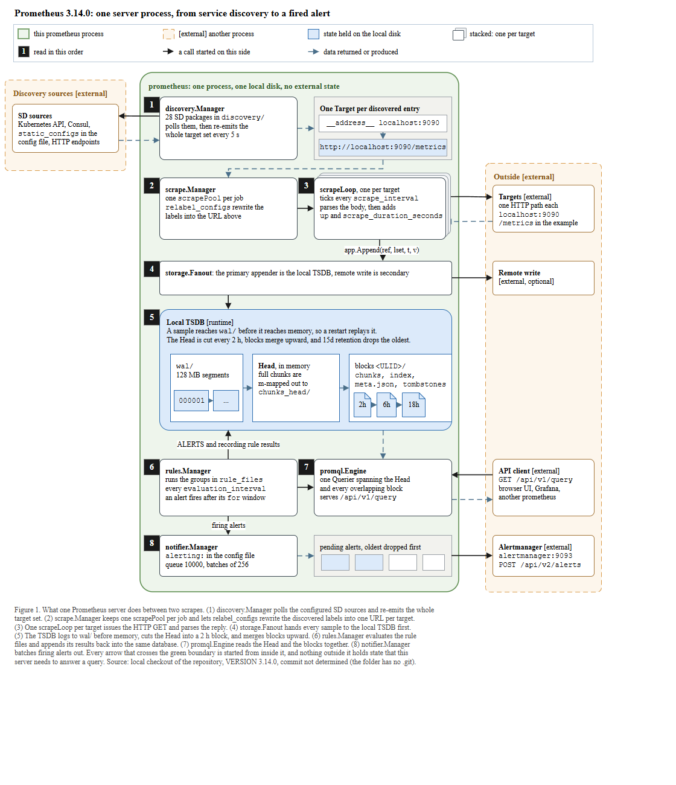
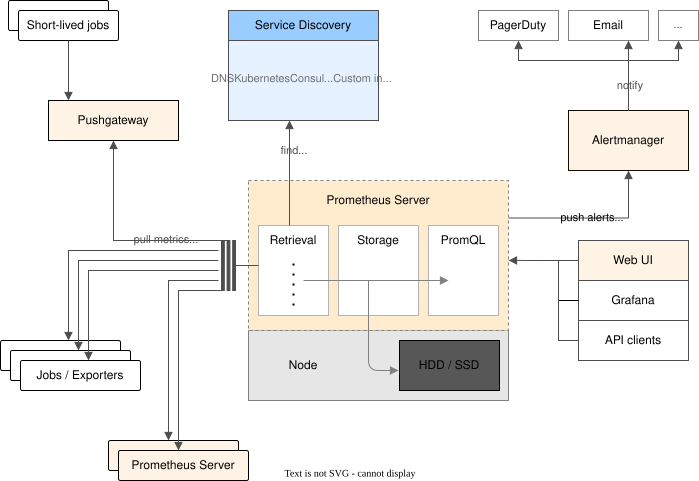

← 전체 목록 · T2-5 · T2
Prometheus — 당겨오는 풀 모델
스킬 개발에 사용하지 않은 저장소이다. 저장소 코드만 입력으로 사용하였고, 정답지는 실행 종료 후 대조 목적으로만 열었다.
블라인드 조건
- 정답지는 프로젝트 자신의 아키텍처 그림이다(
documentation/images/architecture.svg, prometheus.io 'Architecture' 다이어그램). 실행이 끝난 뒤에 열었다. - 프롬프트:
이 저장소의 코드와 문서에서만 읽는다. 이 프로젝트의 공식 문서 사이트나 저자가 그린 아키텍처 그림을 웹에서 찾아보지 않는다.
무엇을 그릴지는 저장소가 정한다. - 정답지 파일이 체크아웃에 없어 실행 중 비교가 불가능하였다. 리포트:
README.md#L38 links documentation/images/architecture.svg, but that file does not exist in this checkout … no comparison was possible.
그림은 코드와 저장소 문서에서만 도출하였다. - 커밋은 확정하지 않았다. 대상 폴더에
.git이 없어(Test-Path .git → False)rev-parse HEAD가 paper-trail 의 HEAD 를 반환하므로, 캡션에commit not determined를 쓰고VERSION 3.14.0으로 식별하였다.
프롬프트
Scout 신규 세션에 아래 내용만 입력하였다. 무엇을 그릴지는 지정하지 않았다.
/method-figure
C:\Users\youngseolee\OneDrive - Microsoft\Desktop\work\code\paper-trail\eval\demo\sandbox\prometheus
이 저장소를 읽고 이 프로젝트가 어떻게 동작하는지 보여주는 아키텍처 그림을
만들어줘.
지켜야 할 것:
- 이 저장소의 코드와 문서에서만 읽는다. 이 프로젝트의 공식 문서 사이트나
저자가 그린 아키텍처 그림을 웹에서 찾아보지 않는다. 무엇을 그릴지는
저장소가 정한다.
- 산출물은 전부 이 폴더에 쓴다:
C:\Users\youngseolee\OneDrive - Microsoft\Desktop\work\code\paper-trail\out\demo\prometheus\run\
figure.drawio, fig.html, report.md,
evidence.json (evidence.py 가 뽑은 재료 원문),
render.png (최종 그림을 렌더한 PNG),
render-r1.png (독립 시각 게이트를 처음 통과시키기 전 시점의 렌더).
게이트가 한 번에 통과하면 render-r1.png 는 만들지 않아도 된다.
- report.md 에는 돌린 검사의 stdout 을 그대로 붙이고, 게이트마다 통과/실패와
몇 라운드 만에 통과했는지 적는다. 스킬에서 모호했거나 따를 수 없었던 것도
적는다.
실행 경과
캡처 프레임 137장 중 8장을 선별하였다. 좌우 방향키로 이동한다.
게이트 4종 결과
| 게이트 | 결과 | 라운드 | 검출 내용 |
|---|---|---|---|
| ① XML 파싱 | PASS | 1 | ET.parse('figure.drawio') → ok |
② check_layout.py | ok (edges 26, labelled 3) | 5 | 라벨 넘침 다수 + 화살표 z-order 1건. 손으로 폭·배치를 고쳐 최종 ok |
③ check_render.js | flags: [] | 2 | 1라운드 spill 1건(meta.json, tombstones 라벨이 상자보다 넓음) → TSDB 3칸(wal 120·Head 144·blocks 170px) 재단 후 0건. 브라우저에서 실제 실행 |
| ④ 독립 시각 게이트 | GATE: PASS | 1 (판정 2회) | 1차는 근거 없는 PASS 여서 다른 모델로 2차 검증(인용 + 코드 대조)을 수행하였다. 둘 다 통과, 사실오류 0. 따라서 render-r1.png 는 없다 |
심사자에게는 렌더 PNG 와 검사 원문만 제공하고 보고서·의도·단계 분해는 제공하지 않는다. 자체 점검 항목을 44개까지 확대해도 통과율이 개선되지 않아, 점검 항목이 아니라 판정 주체를 분리하는 방식으로 변경하였다.
최종 산출물
산출물은 이미지가 아니라 draw.io XML 이다. 확대·이동이 가능하며 내려받아 수정할 수 있다.
figure.drawio · report.md · 뷰어 새 창
정답지 대조


| 항목 | 정답지 | 산출물 | 비고 |
|---|---|---|---|
| 서버 경계 | Prometheus Server 박스(Retrieval·Storage·PromQL) + Node 박스(HDD/SSD) | 초록 no external state존이 8단 + TSDB 를 감싸고, 바깥은 점선 존 | 둘 다 서버 경계를 상자로 표현한다. 산출물은 경계를 넘는 상태가 없다는 점을 구조로 나타냈다(single server nodes are autonomous). |
| 풀 방향 | 왼쪽 레일에 pull metrics 글자, Retrieval 이 Jobs/Exporters·Pushgateway 로 뻗는다 | scrapeLoop → Targets 실선(=이쪽에서 시작한 호출) + 되돌아오는 점선, 범례로 방향을 규정 | 풀 방향이 구조로 드러난다. 산출물은 글자 대신 화살표 방향 + 범례로 인코딩하였다. 정답지의 라벨보다 엄밀하지만 한눈에는 덜 즉각적이다. |
| Service Discovery | 파란 상자에 DNS·Kubernetes·Consul·Custom integration, find targets | discovery.Manager, 28개 SD 패키지, 5초마다 전체 타깃셋 재방출; 점선 external 존 | 같은 요소이다. 산출물은 개수(28)와 주기(5s)까지 표기하였다. |
| 로컬 저장 | Storage 박스 + Node 의 HDD/SSD | Local TSDB: wal/ → Head → 2h/6h/18h blocks 깔때기, 128MB 세그먼트, 15일 보존 | 산출물은 저장 구조를 그린 아티팩트로 펼쳤고, 'no external state' 가 그림으로 확인된다. |
| 질의 경로 | PromQL 박스 ← Web UI·Grafana·API clients | promql.Engine 이 /api/v1/query 서빙, 사람의 GET 만 초록 경계 밖에서 시작 | 같은 요소이다. 산출물은 유일하게 밖에서 시작하는 화살표로 질의를 표시하였다. |
| 알림 | Alertmanager ← push alerts, → PagerDuty·Email (notify) | notifier.Manager(큐 10000, 256 배치) → Alertmanager [external] :9093 POST /api/v2/alerts | 산출물은 Alertmanager 까지만 그리고(그 뒤 PagerDuty/Email 은 외부여서 생략), 대신 큐·배치 수치를 추가하였다. |
| Pushgateway·federation | Pushgateway ← Short-lived jobs, 페더레이션 Prometheus Server 스택도 pull 대상 | 없음. scrape 경로에 집중 | 정답지에는 있고 산출물에는 없다. 리포트 §7 이 생략을 명시하였다. |
| rules·remote write | 규칙 평가·remote write 를 따로 그리지 않음 | rules.Manager(evaluation_interval, for 뒤 ALERTS, 결과를 TSDB 로 되먹임) + storage.Fanout remote write | 산출물이 코드 근거로 추가하였고, 정답지보다 실행 단계가 많다. |